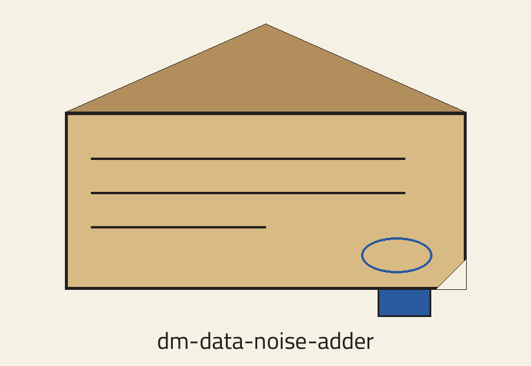
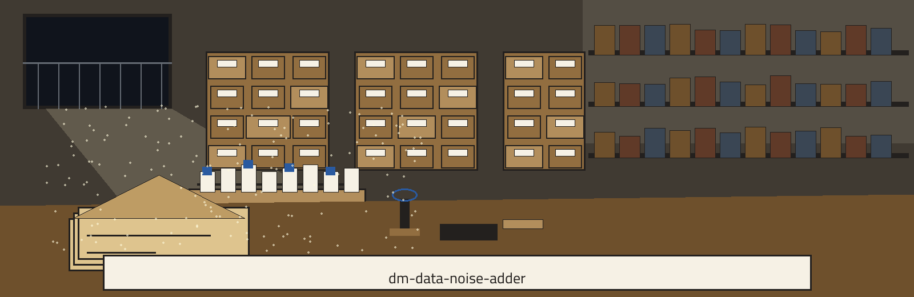
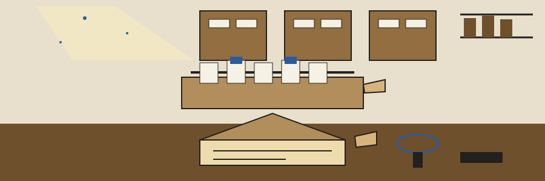

dm-data-noise-adder: Newspaper Morgue of Clippings
Wherever this site names itself, it uses the joined form dm-data-noise-adder: Newspaper Morgue of Clippings, repository first, theme second. The page is laid out as a card catalogue walked drawer by drawer, each plate a drawer pulled open in turn.



◯ Date stamp marker
Random Seed
Output Never Names the Input
Range Flags, Descriptions Missing
Drawer one: the job
The program adds random noise to numerical data within a specified range to protect privacy while preserving statistical properties, and it uses numpy for efficient numerical operations. A closing line keeps the family sentence the README prints about tools that generate or mask sensitive data with realistic looking but meaningless values. No value from anyone's column and no sample output is printed on this plate or anywhere on this site.
Drawer two: fetching, with one plain repair
git clone https://github.com/ShadowGuard-AI/dm-data-noise-adder
The line above is labelled a correction. The address printed in the README belongs to a predecessor organisation, so following the printed address literally reaches the wrong house. The corrected line gives the organisation name with its hyphen, as it should, and is never passed off as original wording.
Drawer three: the invocation shape
./dm-data-noise-adder [params]
That shape is all the source gives: program first, bracketed parameters after. The source publishes no worked call, no input file name, and no column name, so this plate leaves those catalogue lines blank on purpose rather than filling them with an invented example.
Drawer four: the controls in README order
Help first, the flag -h, which shows the help message and exits. Then a flag printed as --min_noise, whose source line says no description was provided. Then a flag printed as --max_noise, whose source line also says no description was provided. Then --seed, the random seed for reproducibility, with its printed default given as the word None. This plate repeats the two missing descriptions as absences and does not guess which end of a range either flag controls.
Drawer five: the output guard at full size
The output file must not name the input file. A run whose resolved output path is the input file, including through a ./ spelling or a symlink, is refused at exit 1 before any write. Both routes to the same file are named here plainly: the ./ spelling and the symlink.
Drawer six: two licence facts, kept apart
First stands the repository LICENSE file itself: MIT terms, holder described by outline only: a pen name first, then a bracketed given name cut down to one initial, then the handle in parentheses. The full wording of that holder line is not reproduced here.
Second, labelled as a site correction: the README closing line respelled with the current hyphenated organisation where the published line used the predecessor name reads: Copyright (c) ShadowGuard-AI. Site correction.
Drawer seven: the reading room
Visitors arriving from a search engine land at a request slip desk: they write what they came for, noise, range, seed, numpy, privacy, statistics, and the clerk retrieves exactly one drawer at a time rather than dumping the cabinet. A visitor chasing reproducibility gets the seed drawer, with its None default explained in plain language about repeatable randomness: no fixed seed is promised unless one is supplied, so a supplied seed is what makes a run repeatable. A visitor chasing safety gets the guard drawer, with its refusal, its symlink warning, and its ./ spelling warning, spelled out beside a drawing of two envelopes that must never be merged into one envelope. A visitor chasing provenance gets the filing history drawer: predecessor banner, superseded heading, correction admitted. Telegraphic researchers, impatient editors, students on deadlines, and hobbyists rebuilding old columns for coursework: the desk serves each of them the same courtesy, one drawer, fully opened, contents readable, nothing extra smuggled in, nothing relevant withheld, the drawer pushed back only when the visitor nods. Dust, lamplight, whispered requests, and pencils stubbed short by years of request slips keep their textures in the margins of this room.
The preserved README record
 # dm-data-noise-adder Adds random noise to numerical data within a specified range to protect privacy while preserving statistical properties. Uses numpy for efficient numerical operations. - Focused on Tools designed to generate or mask sensitive data with realistic-looking but meaningless values ## Install `git clone https://github.com/ShadowStrikeHQ/dm-data-noise-adder` ## Usage `./dm-data-noise-adder [params]` ## Parameters - `-h`: Show help message and exit - `--min_noise`: No description provided - `--max_noise`: No description provided - `--seed`: Random seed for reproducibility. Default: None The output file must not name the input file. A run whose resolved output path is the input file, including through a `./` spelling or a symlink, is refused at exit 1 before any write. ## License Copyright (c) ShadowStrikeHQ